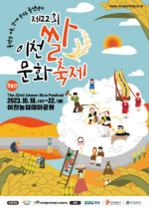

<이천 쌀 문화축제>

이천쌀문화축제는 우리나라 주식이며 전국 최고의 미질을 자랑하는
이천의 대표적인 특산물인 쌀을 주제로 열리는 종합 문화관광축제이다.
어린세대에게 전통 농경문화를 체험하고 어른들에겐 향수를 자아내며
함께 어울릴 수 있는 축제의 한마당으로 남녀노소
이천쌀의 진미를 느낄 수 있는 다양하고 재미있는 각종 행사가 열린다.
<행사내용>
메인프로그램
- 2천명 2천원 가마솥밥: 초대형 가마솥에서 지은 2천인분의 이천쌀밥을 2천원에 푸짐하게 맛볼 수 있는 프로그램
- 무지개가래떡만들기: 600m의 무지개 색 가래떡을 뽑아 관광객과 나누어 먹으며 가을걷이의 풍성함과 농촌의 정겨움을 느낄 수 있는 프로그램
부대 프로그램
- 문화예술공연: 개막놀이, 폐막놀이, 거북놀이, 마당극, 지역 문화예술 단체 공연, 동화인형극, 유치원 공연 등
- 전시 프로그램: 임금님표이천브랜드홍보관, 농경유물 전시, 전통음식 및 천연염색연구회 전시 등
- 포토존 조성: LED은하수, 다랭이논 등
소비자 참여 이벤트
- 시식 행사: 뻥튀기 시연 및 무료 시식 행사, 엿만들기 체험 및 시식 등
- 체험 프로그램: 이천쌀문화학교 운영, 찾아가는 서당 운영, 모내기, 탈곡, 볏짚 공예 체험 등
- 참여 이벤트 : 노래자랑, 줄다리기, 라이스홀 경기, 윷놀이 등
기타
이천쌀 및 쌀가공품 전시, 홍보, 판매 등
축제개요
슬로건:풍성한 가을, 함께 즐기는 풍년잔치
축제기간:2023. 10. 18.(수) ~ 10. 22.(일) 5일간
장소:이천농업테마공원(모가면 공원로 48)
메인으로 돌아가기